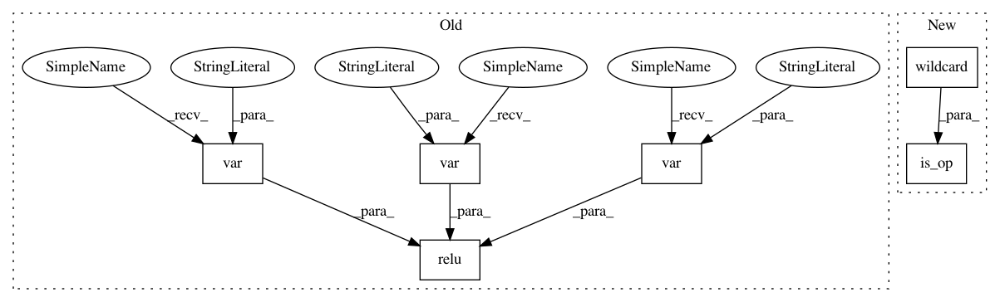

81ad18edc7360dc7110a479e051ba9161a25f2cf,tests/python/relay/test_pass_merge_composite.py,,make_bn_relu_pattern,#,133
Before Change
relu
x = relay.var("x")
gamma = relay.var("gamma")
beta = relay.var("beta")
moving_mean = relay.var("moving_mean")
moving_var = relay.var("moving_var")
bn_node = relay.nn.batch_norm(x, gamma, beta, moving_mean, moving_var)
tuple_get_item_node = bn_node[0]
r = relay.nn.relu(tuple_get_item_node)
return r
def test_simple_merge():
After Change
x = wildcard()
gamma = wildcard()
beta = wildcard()
moving_mean = wildcard()
moving_var = wildcard()
bn_node = is_op("nn.batch_norm")(x, gamma, beta, moving_mean, moving_var)
tuple_get_item_node = TupleGetItemPattern(bn_node, 0)
r = is_op("nn.relu")(tuple_get_item_node)
return r
def check_result(pattern_table, graph, expected_graph):
Utility function to check merge composite results.
In pattern: SUPERPATTERN
Frequency: 3
Non-data size: 6
Instances
Project Name: apache/incubator-tvm
Commit Name: 81ad18edc7360dc7110a479e051ba9161a25f2cf
Time: 2020-05-26
Author: comaniac0422@gmail.com
File Name: tests/python/relay/test_pass_merge_composite.py
Class Name:
Method Name: make_bn_relu_pattern
Project Name: apache/incubator-tvm
Commit Name: 81ad18edc7360dc7110a479e051ba9161a25f2cf
Time: 2020-05-26
Author: comaniac0422@gmail.com
File Name: tests/python/relay/test_pass_merge_composite.py
Class Name:
Method Name: make_conv_bias_relu_pattern
Project Name: apache/incubator-tvm
Commit Name: 81ad18edc7360dc7110a479e051ba9161a25f2cf
Time: 2020-05-26
Author: comaniac0422@gmail.com
File Name: python/tvm/relay/op/contrib/dnnl.py
Class Name:
Method Name: make_pattern
Project Name: apache/incubator-tvm
Commit Name: 81ad18edc7360dc7110a479e051ba9161a25f2cf
Time: 2020-05-26
Author: comaniac0422@gmail.com
File Name: tests/python/relay/test_pass_merge_composite.py
Class Name:
Method Name: make_bn_relu_pattern